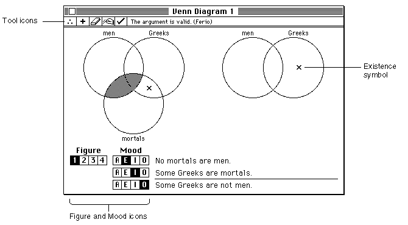

Drawing Bit Images
The Venn Diagrammer application uses bit images to draw several parts of a document window, includingFigure 5-8 shows the location of these items.
- the tool symbols at the top of a document window
- the figure and mood symbols at the bottom of a window
- the existence symbol within the Venn diagram itself
Figure 5-8 Bit images in a document window

The standard way to draw a bit image is to read into memory the appropriate bit data and then call the
CopyBitsroutine to move the data into the desired position in the destination window. The Venn Diagrammer application stores the bit data in resources of type'ICON'. Then it calls its own application-defined routineDoPlotIconto move the appropriate portion of the icon into a document window. Notice that none of the bit images in a document window is actually as large as an icon (which is 32 pixels by 32 pixels). Venn Diagrammer uses this strategy because ResEdit provides a simple way to create and edit'ICON'resources.When Venn Diagrammer starts up, it reads the necessary icon resources into memory using the code in Listing 5-6.
Listing 5-6 Reading
'ICON'resources into memory{Get handles to tool icons.} FOR count := 1 TO kNumTools DO gToolsIcons[count] := GetResource('ICON', kToolsIconStart + (count - 1)); {Get handles to available existence-indicating icons.} FOR count := 1 TO 4 DO gExistIcons[count] := GetResource('ICON', kExistID + (count - 1)); {Get handles to mood icons.} FOR count := 1 TO 4 DO gMoodIcons[count] := GetResource('ICON', kMoodIconStart + (count - 1)); {Get handles to figure icons.} FOR count := 1 TO 4 DO gFigureIcons[count] := GetResource('ICON', kFigIconStart + (count - 1));As you can see, the icons in each group are given contiguous resource IDs in the resource file. The handles to each icon are stored in the appropriate array, accessed by global variables.To draw the tools area of a window, for example, Venn Diagrammer uses the code shown in Listing 5-7.
- IMPORTANT
- As always, you should make certain that none of the returned handles has the value
NIL. For brevity, this check is not shown in Listing 5-6.
Listing 5-7 Drawing the tools area of a document window
{Redraw the tool area in the window.} FOR count := 1 TO kNumTools DO BEGIN SetRect(myRect, kToolWd * (count - 1), 0, kToolWd * count, kToolHt); DoPlotIcon(myRect, gToolsIcons[count], myWindow, srcCopy); END;This code fragment calls the application-defined routine DoPlotIcon to draw the appropriate portion of the icon in the specified rectangle. The DoPlotIcon procedure is defined in Listing 5-8.Listing 5-8 Drawing a portion of an icon
PROCEDURE DoPlotIcon (myRect: Rect; myIcon: Handle; myWindow: WindowPtr; myMode: Integer); VAR myBitMap: BitMap; BEGIN myBitMap.baseAddr := myIcon^; myBitMap.rowBytes := 4; myBitMap.bounds := myRect; CopyBits(myBitMap, myWindow^.portBits, myRect, myRect, myMode, NIL); END;The DoPlotIcon procedure plots a portion of an icon by defining a bitmap that includes the desired portion of the icon. (The desired portion of the icon is specified by the myRect parameter.) Then DoPlotIcon calls the QuickDraw routine CopyBits to copy the appropriate bits from their location in memory to the desired location in the specified window.The CopyBits procedure transfers a bit image between two existing bit maps. In this case, the two bitmaps are the bitmapped portion of the icon and the bits in the destination window (which are specified by the portBits field of the window's graphics port; see Listing 6-1 on page 112 for details). The myRect parameter specifies the rectangle to copy; it's passed to DoPlotIcon from the calling routine so that DoPlotIcon can be used to plot different parts of the source icon. Finally, DoPlotIcon is passed a transfer mode, which indicates how the bits are to be drawn in the existing bit image of the destination rectangle. The constant srcCopy is passed in Listing 5-7 to indicate that the source bitmap is to overwrite the destination bitmap.